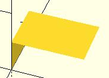

Mistakes in defining polyhedra include not having all faces with the same order, overlap of faces and missing faces or portions of faces. As a general rule, the polyhedron faces should also satisfy manifold conditions:
The first rule eliminates polyhedra like two cubes with a common edge and not watertight models; the second excludes polyhedra like two cubes with a common vertex.
When viewed from the outside, the points describing each face must be in the same order . OpenSCAD prefers CW, and provides a mechanism for detecting CCW. When the thrown together view (F12) is used with F5, CCW faces are shown in pink. Reorder the points for incorrect faces. Rotate the object to view all faces. The pink view can be turned off with F10.
OpenSCAD allows, temporarily, commenting out part of the face descriptions so that only the remaining faces are displayed. Use // to comment out the rest of the line. Use /* and */ to start and end a comment block. This can be part of a line or extend over several lines. Viewing only part of the faces can be helpful in determining the right points for an individual face. Note that a solid is not shown, only the faces. If using F12, all faces have one pink side. Commenting some faces helps also to show any internal face.
CubeFaces = [ /* [0,1,2,3], // bottom [4,5,1,0], // front */ [7,6,5,4], // top /* [5,6,2,1], // right [6,7,3,2], // back */ [7,4,0,3]]; // left
After defining a polyhedron, its preview may seem correct. The polyhedron alone may even render fine. However, to be sure it is a valid manifold and that it can generate a valid STL file, union it with any cube and render it (F6). If the polyhedron disappears, it means that it is not correct. Revise the winding order of all faces and the two rules stated above.

example 1 showing only 2 faces
Created with the Personal Edition of HelpNDoc: Easily create Web Help sites